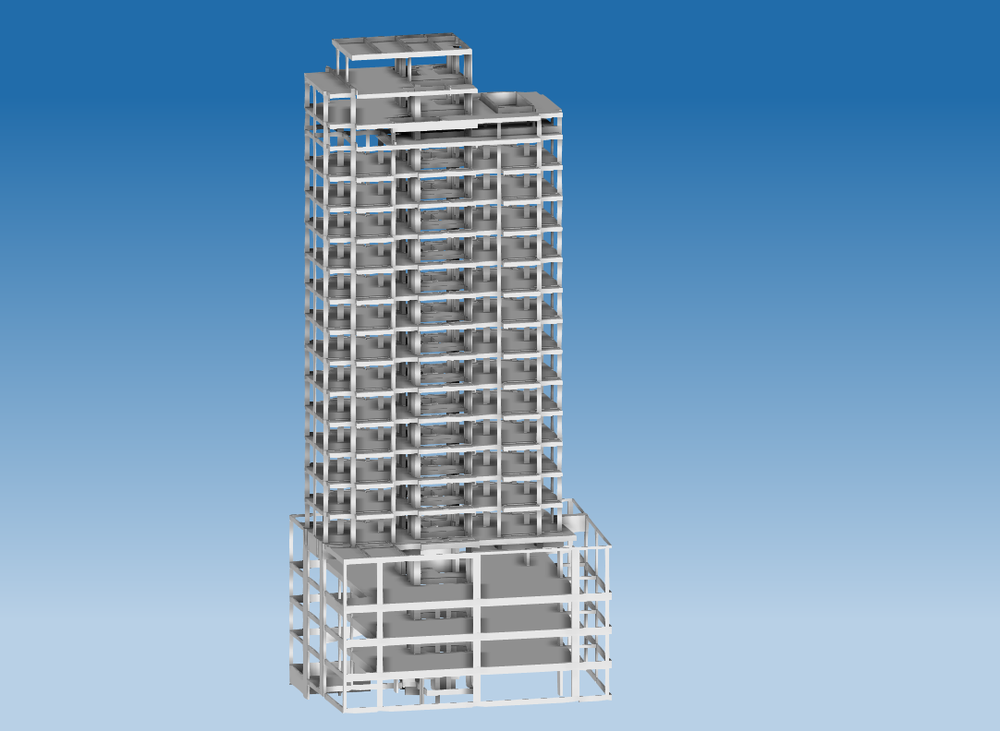

Edifício residencial de 18 andares em Osasco - SP
Edifício de 18 andares em concreto. Utiliza lajes nervuradas nos estacioanmentos, lajes sobre vigas nos pavimentos tipo, e possui cobertura com piscina.
...
Informações técnicas